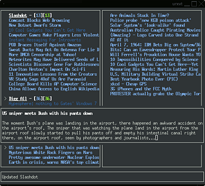

NRSS
Dieser Artikel wurde für die folgenden Ubuntu-Versionen getestet:
Ubuntu 14.04 Trusty Tahr
Zum Verständnis dieses Artikels sind folgende Seiten hilfreich:
 NRSS, der NCurses Feed Reader ist ein RSS-Feedreader für die Kommandozeile. Er unterstützt sowohl das RSS-, wie auch das ATOM-Format. Sein herausstechendstes Merkmal ist sein Aussehen. NRSS versucht auf einem einzigen Bildschirm so viele Informationen wie möglich zur Verfügung zu stellen, ohne überladen zu wirken. Es hebt sich dabei in der Art der Darstellung der Feeds und der Inhalte teils erheblich von anderen Feedreadern ab.
NRSS, der NCurses Feed Reader ist ein RSS-Feedreader für die Kommandozeile. Er unterstützt sowohl das RSS-, wie auch das ATOM-Format. Sein herausstechendstes Merkmal ist sein Aussehen. NRSS versucht auf einem einzigen Bildschirm so viele Informationen wie möglich zur Verfügung zu stellen, ohne überladen zu wirken. Es hebt sich dabei in der Art der Darstellung der Feeds und der Inhalte teils erheblich von anderen Feedreadern ab.
NRSS hat jedoch noch ein paar kleine Probleme mit dem Parsen von HTML-Artikeln, so dass manchmal noch HTML-Tags enthalten sind. Da die Weiterentwicklung eingestellt wurde, ist der Nachfolger Canto vom gleichen Entwickler die bessere Wahl.
Installation¶
 NRSS befindet sich in den Paketquellen und kann durch folgendes Paket installiert [1] werden:
nrss (universe)
 mit apturl
mit apturl
Paketliste zum Kopieren:
sudo apt-get install nrss
sudo aptitude install nrss
Benutzung¶
Nach der Konfiguration kann NRSS mit dem Befehl [3]:
nrss
gestartet werden.
Die Bedienung erfolgt durch Tastenkürzel, die man der folgenden Tabelle entnehmen kann:
| Tastenkürzel | Funktion | Tastenkürzel | Funktion |
| H | Zeigt die Hilfe. | Q | Beendet NRSS. |
| ↑ | Vorherigen Artikel. | ↓ | Nächsten Artikel. |
| Bild ↓ | Nächsten Feed. | Bild ↑ | Vorherigen Feed. |
| ⇧ + C | Zeige oder verberge den Baum. | G | Öffne Feed im Browser. |
| R | Aktualisiere Feed. | Zeige Artikel. | |
| ⇧ + R | Aktualisiere alle Feeds. | ⇧ + M | Markiere alle Artikel als gelesen. |
| ⇧ + D | Zeichne den Bildschirm neu. | ||
Konfiguration¶
Zuerst muss man Feeds zu NRSS hinzufügen. Dazu öffnet man mit einem Editor [2] die Datei ~/.nrss/config. Die generelle Syntax sieht dabei wie folgt aus:
add "Url zum Feed 1" "Name von Feed 1" add "Url zum Feed 2" "Name von Feed 2" ...
Will man also zum Beispiel den RSS-Feed von Slashdot hinzufügen, sieht die entsprechende Zeile so aus:
add "http://rss.slashdot.org/Slashdot/slashdot" "Slashdot"
Weitere Einstellungen, die man in diese Datei, eintragen kann, sind:
#Zeitintervall in Minuten, um nach neuen Artikeln zu suchen: default_rate "30" #Wieviele Artikel pro Feed angezeigt werden sollen: default_show "30" #Wieviele Artikel pro Feed gespeichert werden sollen: default_maxitems "50" #Mit welchem Browser URLs geöffnet werden sollen: browser "firefox-2 -new-tab %u"
Die drei ersten Einstellungen lassen sich auch für jeden Feed, den man hinzugefügt hat, einzeln vornehmen. Dazu entfernt man das default_ vor der Option und gibt zuletzt noch den Namen des Feeds an. Will man also, dass der oben hinzugefügte Feed "Slashdot" alle 5 Minuten aktualisiert wird, fügt man diese Zeile ein:
rate "5" "Slashdot"
Zahlreiche weitere Einstellungsmöglichkeiten finden sich in der Manpage des Programms.

- Erstellt mit Inyoka
-
 2004 – 2017 ubuntuusers.de • Einige Rechte vorbehalten
2004 – 2017 ubuntuusers.de • Einige Rechte vorbehalten
Lizenz • Kontakt • Datenschutz • Impressum • Serverstatus -
Serverhousing gespendet von